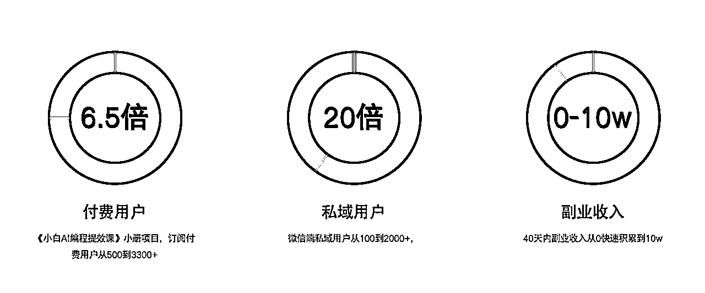

来源：https://s0d3redrubi.feishu.cn/docx/GdTZdlrI9oz51Ux33PdcfIsknce
先简短的做个自我介绍吧
我叫鹤涵，现在在北京从事AI智能体创业。
作为前大厂全栈开发者，我转型成为AI解决方案架构师，目前担任斑码AI的联创兼技术负责人。
过去一年，我们成功获得了400万元智能体商业订单，同时建立了4000人的技术社群和近200人的斑码合伙人社群。
公司案例介绍：https://l0lupq5bcjq.feishu.cn/docx/XqWBd5BpxoYG5hx81WacDNSPnBc
我出生在东北一个普通工人家庭，从小到高中都是平平常常的学生，成绩中等偏上。
大学期间主要在玩乐中度过，没有明确的人生规划。直到大四实习，才开始思考未来发展。
经过在电气工程师、销售和运营岗位的尝试后，我发现自己这个内向的性格更适合技术工作。考虑到软件行业的发展前景和薪资水平，我决定自学Java。
2015年的就业环境相对宽松，掌握SSM框架就能找到工作，了解大数据、框架源码和JVM则能获得更高薪资,就这么我毕业就转到了Java开发的岗位了。
进入工作后，就是专心做好技术工作，踏实地做事，逐渐提升自己的技术能力。
在职场1-3年的时间主要是提高技能。如掌握更多技术，积累更多业务经验。从「啥都不会」的技术新人到可以在一个业务里独挡一面技术组长。
这个阶段是获得感很强的阶段，总能学到新的东西，个人成长很快，薪资的提升也比较快。
在职场4-7年的时间主要是提高能力。期间承担的业务范围就逐渐扩大，干过创业公司的技术负责人，也干过中大厂公司的技术组长，SaaS软件公司应用架构专家。
虽然薪资也还有一些增长，但是随着互联网行业的红利消失，增量市场变成存量市场，确实越来越「卷」。
从最开始3000块钱的工资也涨到年薪50万-100万之间了,虽然工资涨了20多倍, 也在北京买定居了，但是行业的天花板越来越明显。
主业加班严重时薪降低，让人没有思考的时间，这点就很可怕，就像温水煮青蛙等你发现时候已经“熟了”，所以想要再上一层楼必须的另辟蹊径。
在这个阶段也跟其他同事交流过升职加薪的困惑，大家普遍反映薪资上涨变得越来越难。这也让我意识到，仅靠做好本职工作已经不足以实现更大的突破。我需要寻找新的机会和方向，而这个时候，AI技术的浪潮恰好为我打开了一扇新的大门。
世界唯一不变的是变化。2022年12月ChatGPT的出现，我第一时间就去试用了，跟它对话的时候真的像跟真人说话一样，而且它的无所不知，当时真的是惊呆了。这次AI真的要改变世界了。
后续能力更强的GPT-4的发布，然后国内外所有大公司（Google，facebook，百度，阿里，360等等）全都入局大模型也验证了这一点。
在23年开始的重点方向：AI+IP，业余时间All in AI。。
期间把AI应用于生活的方方面面，主要如下：
上面几点都取得了一些进展吧，认识了很多做AI行业的朋友，也和几个大佬有了深度合作。
由于当时还是公司在职以副业的形式做，视频号和公众号都做到5000粉丝左右，账号主要是垂直AI的粉丝，当时也接了几条广告加起来变现1w块左右吧。最重要的是有很多大佬都是通过公众号找到的我，而且都是带着明确的合作意向和预算的，合作的概率非常高。
当时也加入了很多头部的AI社群，经常在社群里面做分享，社群里好多人都认识我，成为社群里做AI技术相关的一个小IP，这也给我积累了很多靠谱的合作伙伴。
在职期间做的套壳网站靠卖部署三个月赚10w
https://chat.wenwen-ai.com/market
发现需求
当时国内的AI大模型还不成熟，就连率先推出产品的百度也需要时间追赶OpenAI的水平。
我们通过短视频获得了第一波用户增长，发现用户最关心的需求是"免费、无需注册账号、无需科学上网"。在OpenAI大规模封号期间，我们的视频在各平台都获得了不错的播放量，累计达到20万自然播放。网站日活跃用户达到千人规模，公众号新增粉丝1500，用户普遍反馈体验良好。
MVP快速上线
经过详细调研，我们发现市面上的同类产品普遍存在用户体验不佳的问题，包括界面设计不友好、响应速度慢、功能不完整等痛点。基于这些市场调研结果，我们决定快速行动起来。选择了一个成熟的开源框架作为基础，在短短两天内就完成了新版本的开发和上线。新版本不仅包含了基础的登录注册功能，还集成了Midjourney（MJ）AI绘画功能。为了初步测试市场反应，我们在私域社群和GitHub平台上进行了小规模的推广活动。
网站变现
网站在当时的变现方式有两种，c端的订阅，b端的独立部署。这里前面公众号链接到的大佬就起到了很大的作用，大佬有很多的AI粉丝，通过合作的方式c端的用户量直接上到了1w以上，也卖了很多份独立部署，赚到了10w以上的收入，算是做AI应用的一个初步的正反馈。
刚认识斑码AI的合伙人峰哥时，我们发现彼此都是技术出身，也都有程序员培训的经验。基于这些共同点，我们决定开发一个AI编程小册，仅用两周就完成上线。
我们在内容上巧妙地将AI与编程结合，并加入了效率提升的内容。小册包含六大核心模块：AI编程实战、AI编程工具、AI高效办公、AI副业赚钱、AI提示词工程和AI私人助手。这本名为《小白的AI编程提效课》的入门教程出乎意料地受欢迎，最终售出了3600多份，成为当时AI编程领域最畅销的小册。
这本小册为斑码建立了强大的私域基础，带来了2000多位私域会员。虽然10元的定价让小册本身收益有限，但这些早期用户为斑码的后续发展奠定了重要基础。其中，第一批会员中就有近50人后来成为了斑码的合伙人。斑码现在的许多项目都是由这批早期合伙人共同打造的，可以说正是这群人的加入造就了今天的斑码。

我们斑马AI，我主要来负责B端的业务，峰哥来负责C端业务，B端和C端相互赋能。
C端的业务吸引大量的用户，从中筛选有交付能力的人跟有渠道能力的人，借助斑码AI的平台来进行组队完成商单项目，给B端的商单交付和商单线索做支撑。
B端业务产生的现金流也会给参与的合伙人进行分配，形成正向飞轮。
B端收入大概占比75%。客户遍布各个行业（国央企，中小企业，上市企业），业务主要有三个方向智能体开发、AI应用开发、SaaS应用。
宗旨是帮助企业把AI落地到真实的业务中去
企业AI转型主要为下面几个方向：AI客服，AI搜索匹配，智能决策/ChatBI，AI获客，数智化转型，企业工作流提效，AI内容生成,AI赋能垂直行业。
上述几个方向都有落地的案例：https://l0lupq5bcjq.feishu.cn/docx/XqWBd5BpxoYG5hx81WacDNSPnBc
我们自研了一套完整的技术底座“问问AI”，在底座上来服务各种客户的需求。
“问问AI”是一款由公司自主研发的企业级AI智能体应用开发平台，基于先进的大语言模型技术。该平台整合了Agent、工作流设计、知识库、开发、使用、管理以及知识沉淀等多种功能，为企业提供一体化的AI解决方案。
就比如25年3月份，我们斑码团队承接了一个合同总金额126w的央企总部AI智能体开发平台建设项目，就是基于我们的智能体平台上进行智能体的定制化开发。
去年24年6月份，承接了75w的杀毒saas软件服务，也是基于我们斑码合伙人社群的产研开发力量进行完美交付。
还有我们做了AI招聘，AI少儿绘画教育，AI标书，AI医疗助手等等基于智能体架构的AI应用，也都是基于问问AI加上斑码合伙人社群的产研开发力量进行商单交付。
参与商单的同学除了能获得收入之外，更多的是可以接触真实的企业在AI应用下的场景，对自己的成长也有很大帮助。
C端收入占据总收入的25%左右，虽然占比相对较小，但C端业务为我们带来了巨大的价值和影响力。这些用户不仅提供了稳定的收入来源，更是我们持续创新和发展的重要推动力。我们所有的C端用户都在以不同方式为公司的成长贡献力量，他们的反馈和建议帮助我们不断完善产品和服务。
我们精心设计了一个完整的三级产品体系，从入门到进阶依次是：基础课程（适合AI领域新手）、专业训练营（面向想深入发展的学员）、以及合伙人项目（为最优秀的人才提供更大的发展平台）。这种阶梯式的产品结构让用户能够根据自身需求和能力水平选择最适合的参与方式。
合伙人的三大核心赋能板块：
通过生态共建和资源整合，「斑码AI合伙人」致力于帮助个人和企业共享AI技术红利，抢占智能体时代先机，共创美好未来！
团队内部深度利用各类AI工具来大幅提升整体开发效率和生产力。
比如开发同学都需要熟练掌握并运用AI辅助编程技术，包括代码生成、代码优化和debug等场景；
产品同学则需要借助AI来快速输出原型图和产品设计方案，从而加速产品迭代；
测试同学也通过AI自动化测试工具来提升测试覆盖率和效率。通过AI工具的全面应用，我们实现了开发周期的显著缩短和产出质量的提升。
斑码在课程和训练营项目中采用了一种独特的协作模式，积极邀请我们优秀的合伙人深度参与各个环节。由斑码团队负责整体战略规划和运营管理，而合伙人则可以根据各自的专长担任讲师、助教、社群运营等不同角色。我们建立了一套完善的收益分配机制，确保每位参与者都能获得与其贡献相匹配的回报。实践证明，这种多方参与的模式不仅能激发更多创新想法，还能显著提升课程质量和学员体验。如果仅依靠一两个人独立运作，很难实现规模化发展和持续创新。正是通过这种开放共赢的合作方式，我们才能不断扩大影响力，为更多学员创造价值。这也验证了我们一直坚持的理念：只有通过真诚利他、互利共赢，才能在AI时代构建起真正可持续发展的商业生态。
在商单项目执行中，我们采用了一种灵活而高效的混合团队模式。具体来说，我们将斑码的全职专家与经验丰富的兼职合伙人进行有机结合，组建成一个完整的项目交付团队。这个团队包含了产品规划专家、技术研发工程师、专业的项目经理以及质量保证测试人员。每个角色都各司其职，又能紧密配合，确保项目的顺利交付。这种创新的合作模式不仅提高了项目执行效率，还能充分利用各方优势资源。通过实践，我们越发确信这种灵活的团队组织方式将成为未来超级个体时代的主流趋势，因为它既保证了专业水准，又提供了充分的灵活性和可扩展性。
斑码合伙人社群是一个充满活力和多样性的生态系统，每位成员都带来独特的专业技能和行业经验。随着社群规模的不断扩大，成员之间的互动和连接呈指数级增长，产生了令人惊叹的协同效应。这种网络效应不仅体现在技术交流和知识分享上，更在商业机会的互通有无方面展现出强大威力。举个具体例子：我们曾经通过一位合伙人的人脉网络，成功对接了一个重要的企业客户。这位合伙人不仅为公司带来了可观的业务机会，自己也通过介绍费获得了丰厚的回报。这种双赢的合作模式激励着更多合伙人积极拓展资源，形成良性循环。
我们斑码一步一个脚印走过的一些方法论是可以被复制学习的。
当风口来临时，确实连猪都能飞起来。行业的选择比个人的努力更重要。从我两次技术转型的经历——从传统领域转向Java，再转向AI，我深有体会。这并非我比传统行业的人更聪明，那些领域里有许多才华横溢的人才。只是那些行业已经进入下行期，缺乏增长动力，即便付出双倍努力也难有突破。
我们从前两就开始布局AI智能体才到，我预测今年智能体赛道一定会大火，要尽快上车。
我们最开始也尝试了非常多的方向，可以说是眉毛鼻子一把抓。从AI代写到数字人，再到AI编程和智能体，每个热门赛道都想要尝试，结果就是精力过于分散，导致每个方向都只能浅尝辄止，无法做到真正的精通和突破。这种广撒网的策略在当时看似在抓住所有机会，实际上却没有在任何一个领域建立起真正的竞争优势。经过深刻反思，我们意识到在AI这个快速迭代的时代，只有在一个垂直赛道深耕细作，做到极致，才能真正找到自己的生存空间和发展机会。正是基于这样的认知，我们最终决定将所有资源和精力都集中在智能体这个赛道上。通过聚焦发力，专注突破，我们才逐渐在圈内建立起了自己的品牌影响力，获得了一定的市场认可。
别做「高认知」的穷人，AI时代更是这样。纯知识不值钱，好问题值千金。
之前有很多时候学习是没有目的的。比如学习经济学，金融学，心理学。花了不少时间，知识感觉自己好像认知提升了，但是没有拿到什么收入上的结果。
其实这种无目的的学习方式是效率极低的，而且没有实际运用场景的学习理解不会深刻。
「以终为始」才是高效的方式。我先有个目标，为了达到这个目标我需要做哪些动作，再去一个个突破才是正解。
拖延症附体，对于「重要不紧急」的事总是拖成「重要又紧急」，总会麻痹自己说还有时间休息休息，最终结果只能达到60分。所以我会把自己的行程安排的很满，并且设置deadline，逼着自己必须得先干。
对于一些风口机会，总会想着把里面逻辑都想明白了再开始做，等想明白了风口也消失了，开始内卷了。
正确的方式应该是看到别人能在某个赛道拿到成绩，简单做个MVP，执行力拉满跟上。事情想是想不明白的，只有看过，做过，慢慢才能想明白。
这些年错过了太多合适的风口了！房地产，PC互联网，移动互联网，公众号，短视频，不能再错过这一次的AI了。
我们最初的冷启动就是从个人IP入手的。制作一份内容能让多个人看到，这相当于给自己的时间加了杠杆，因此打造个人IP是必不可少的。
作为斑码合伙人，我们给大家提供孵化服务。许多经过孵化的合伙人已经实现了五位数到六位数的收入。
展望未来，我对智能体的发展前景充满信心。随着大模型能力的增强，2025年将成为智能体落地元年。
想象这样的场景：你的智能体管家在早晨不仅会唤醒你，还会为你分析市场数据和制定个性化的饮食建议。这样的未来已经近在眼前。
斑码将继续专注智能体领域，打造产学研一体化的平台。我们将在C端培养智能体人才，建立共创社区，同时为B端企业提供完整的智能体解决方案。我们会持续优化问问智能体平台，让智能体技术更易上手，更好地服务于获客和私域运营等实际业务场景。
未来已来，让我们一起聚焦智能体，扬帆远航，顶峰相见！
我是在北京all in智能体创业的鹤涵